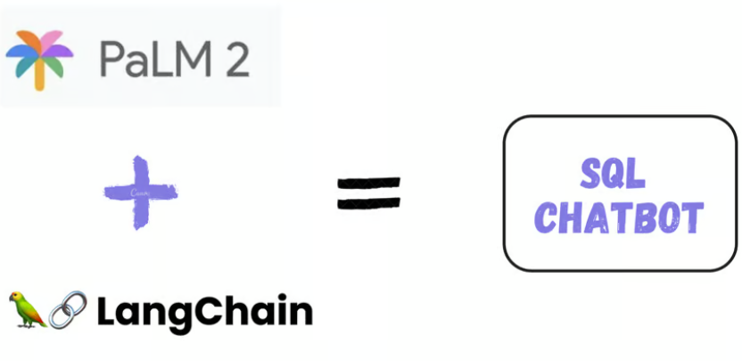
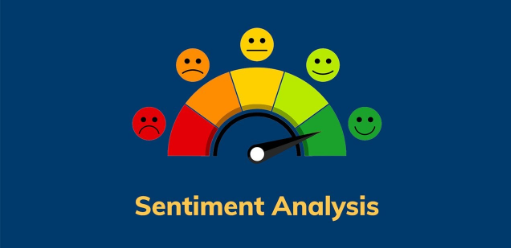
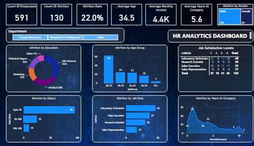
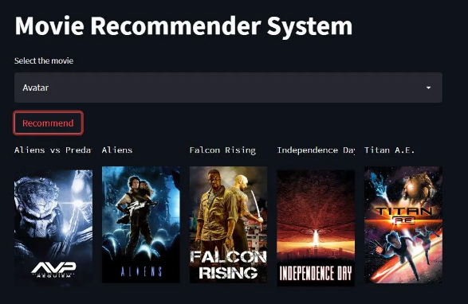

Application capable of querying MySQL database using natural language inputs. The application facilitates retrieval of data and analysis of complex queries, enabling users to obtain actionable insights efficiently.
Technology: MYSQL, SteamLit, LangChain using Google Palm

Analyzed 34,000+ Amazon product reviews to understand customer sentiments. Used NLP and ML to predict satisfaction levels and identify key insights for product improvement.
Technology: NLP, NLTK, ML, Neural Networks, Clustering

A web application assists users in estimating insurance costs accurately. It organizes data to build a tool that predicts insurance premiums, aiding potential buyers in decision-making.
Technology:NumPy, Pandas, Seaborn, EDA, ML, Scikit-Learn, Flask
Analyzed annual Facebook and AdWords campaigns for a marketing agency to optimize budget and improve client ROI by identifying the more effective platform.
Technology: Pandas, EDA, Hypothesis Testing, A/B Testing, Regression Analysis

Application capable of querying a MySQL database using natural language inputs. The application should facilitate the retrieval of data and analysis of complex queries, enabling users to obtain actionable insights efficiently.
Technology: MYSQL, SteamLit, LangChain using Google Palm
A database schema was designed to organize property data. Conducted data analysis and created insightful reports using SQL. Provided recommendations and creative solutions to ensure efficient data management.
Technology: SQL, MariaDB, Lucid Charts

A web application provides movie recommendations based on user input. The problem addressed was helping users discover movies they might enjoy by analyzing a large dataset of 5,000 movies.
Technology: Pandas, NLTK, ML, Scikit-learn, Streamlit
A web application predicts house prices, addressing the need for accurate valuations. Analyzed housing data, created features, and tested models to enhance property value assessments.
Technology: MYSQL, SteamLit, LangChain using Google Palm